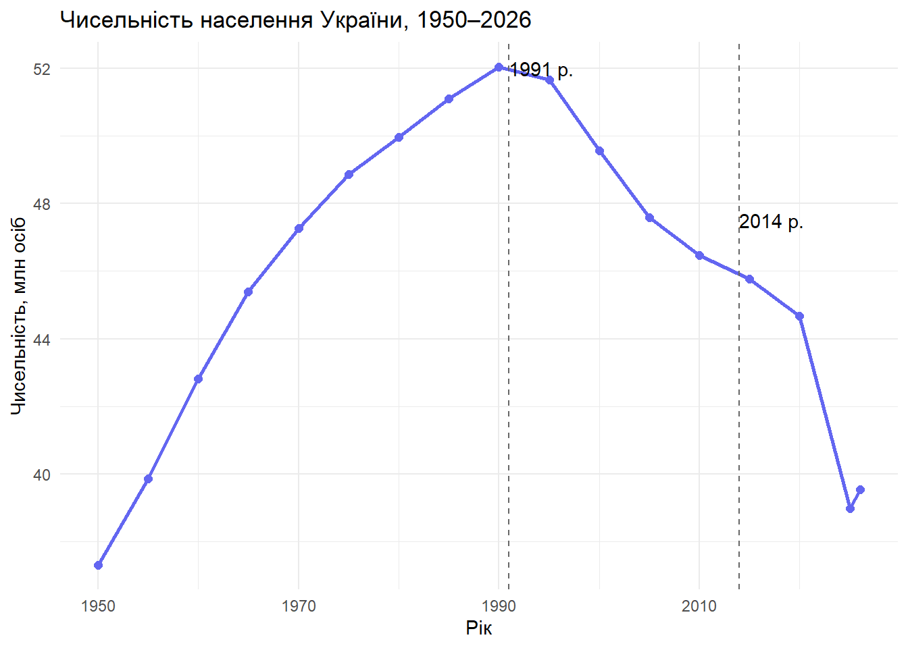
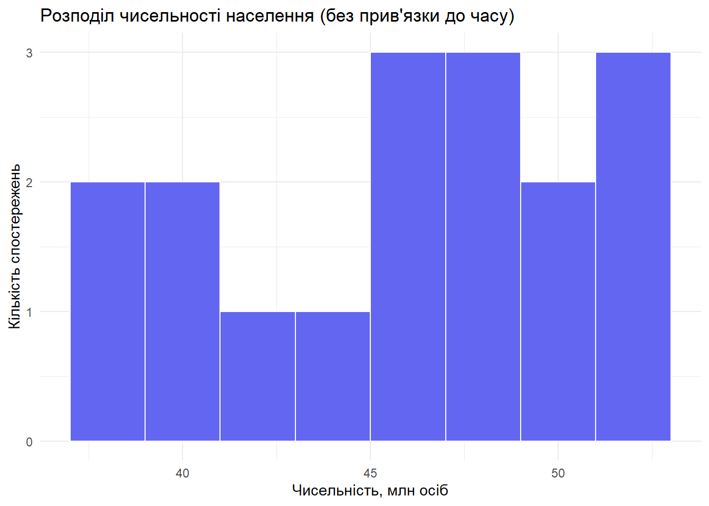
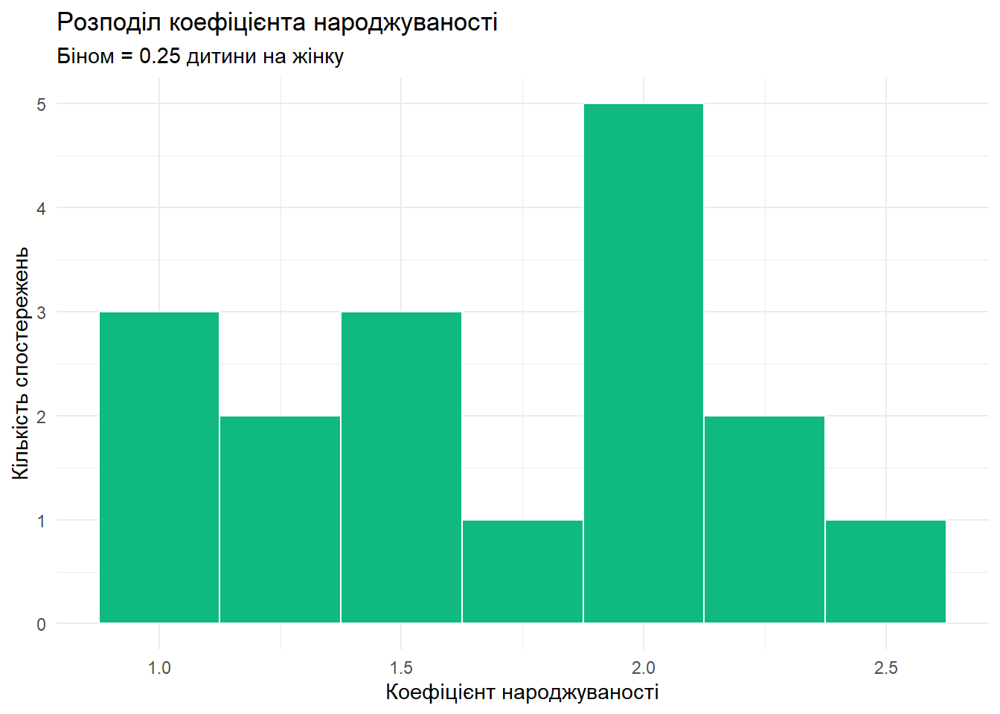
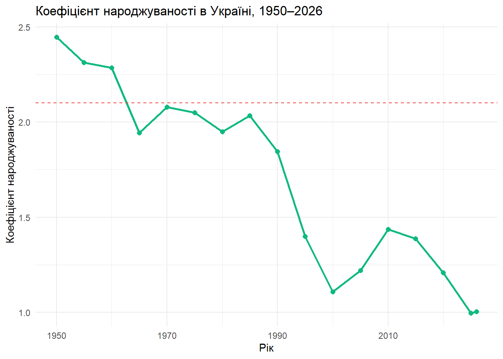
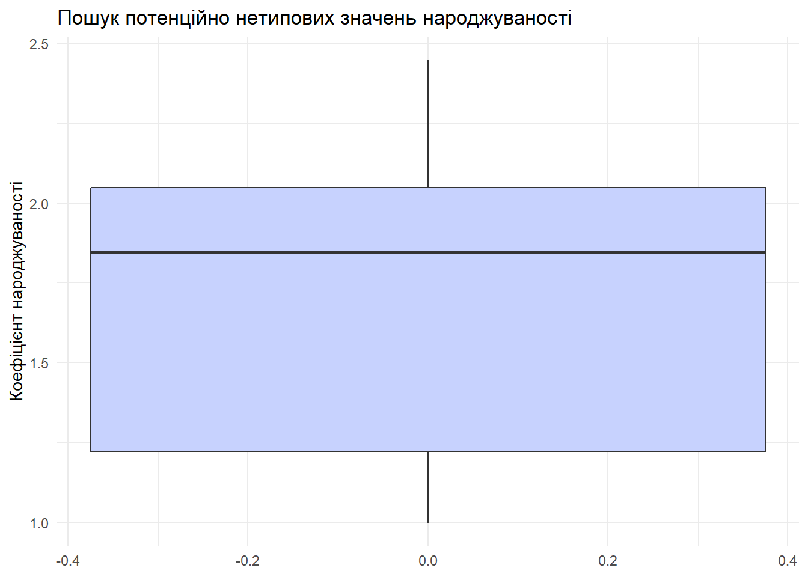
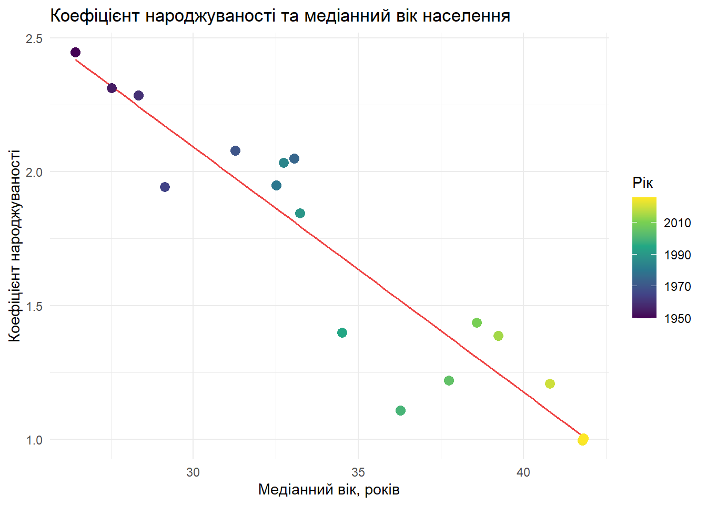
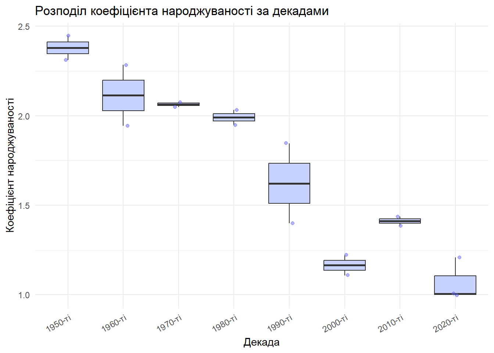
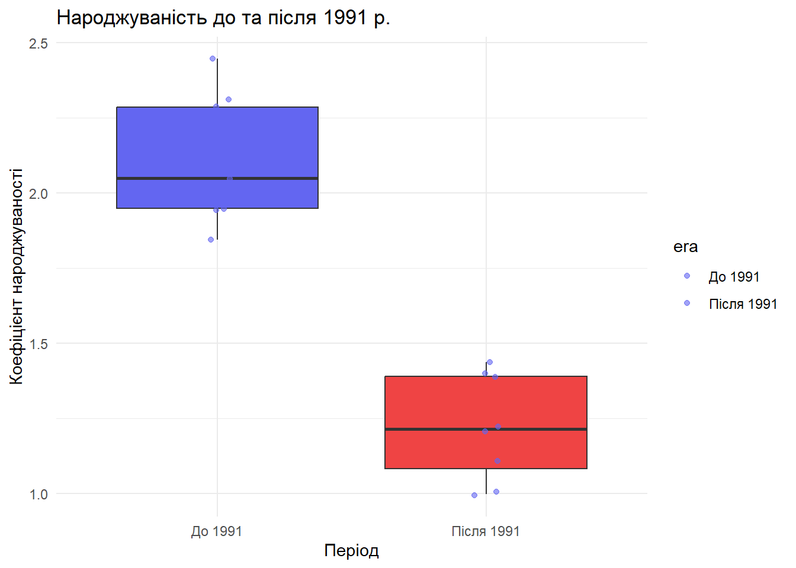

#install.packages(c("tidyverse", "jsonlite"))
library(tidyverse)
library(jsonlite)
dir.create("figures", showWarnings = FALSE)
dir.create("data/processed", recursive = TRUE, showWarnings = FALSE)Лабораторна робота № 3. Розвідувальний аналіз і візуалізація даних
Документ зроблено в Quarto
Мета: Опанувати відтворюваний процес розвідувального аналізу даних (Exploratory Data Analysis, EDA) на підготовлених у ЛР2 наборах: дослідити варіацію та коваріацію змінних, описати розподіли статистиками та графіками, виявити потенційні аномалії, сформулювати й попередньо перевірити розвідувальні гіпотези та підготувати інтерпретовані візуалізації.
Індивідуальне завдання на лабораторну роботу
Дані — демографічний набір щодо України за 1950–2026 рр. (Worldometer, отриманий через html/json mining у ЛР2, файл data/raw/median_year.json).
Виконані пункти індивідуального завдання:
- сформульовано три аналітичні запитання (розділ «Аналітичні запитання»);
- для двох кількісних змінних (
total,fertilityRate) побудовано описи розподілу (числові статистики та графіки); - знайдено потенційні аномалії для кількісних ознак (правило 1.5·IQR + змістовний аналіз різких стрибків);
- досліджено зв’язки між змінними (
fertilityRatevsmedianAge;fertilityRatevstotal) та порівняно розподіли між декадами; - сформульовано дві робочі гіпотези з графічними/числовими свідченнями й обмеженнями;
- створено підсумкову аналітичну таблицю та збережено п’ять графіків у
figures/; - написано висновок.
Аналітичні запитання
- Варіація чисельності. Як змінювалась і наскільки сильно варіювала чисельність населення України (
total) протягом 1950–2026 рр.? - Варіація та аномалії народжуваності. Який рівень народжуваності (
fertilityRate) є типовим, чи є нетипові (аномальні) значення та які? - Коваріація та групи. Чи пов’язане зниження народжуваності зі старінням населення (
medianAge), з динамікою чисельності населення (total) і чи відрізняється народжуваність між десятиліттями?
Хід роботи
Крок 1. Підготовка середовища
Крок 2. Завантаження підготовлених даних
У ЛР2 дані отримані з Worldometer і збережені у data/raw/median_year.json.
demo_path <- "data/raw/median_year.json"
if (!file.exists(demo_path)) {
stop("Не знайдено файл")
}
demo_all <- fromJSON(demo_path)
demo <- demo_all |>
select(year, total, medianAge, fertilityRate, urban, migrantNet, yearlyGrowthRate) |>
mutate(total_mln = round(total / 1000000, 2))
demoyear - рік.
total — чисельність населення.
fertilityRate — коефіцієнт народжуваності.
medianAge — медіанний вік населення.
migrantNet — міграція (нетто).
urban — частка населення, що проживає в міських районах.
yearlyGrowthRate - відносний приріст населення (yearlyGrowth / prevTotal).
Перевіримо контракт даних: унікальність ключа year, коректність значень.
stopifnot(
!anyDuplicated(demo$year),
all(demo$total >= 0, na.rm = TRUE),
all(demo$total_mln >= 0, na.rm = TRUE),
all(demo$fertilityRate > 0, na.rm = TRUE),
all(demo$medianAge > 0, na.rm = TRUE)
)Вибірка нерівномірна - до 2020 інтервали 5-річні, а 2026 стоїть за рік після 2025.
Крок 3. Профіль якості та типів змінних
quality <- demo |>
summarise(
n_rows = n(),
years_min = min(year),
years_max = max(year),
missing_total = sum(is.na(total)),
missing_fert = sum(is.na(fertilityRate)),
missing_age = sum(is.na(medianAge)),
distinct_total = n_distinct(total_mln),
distinct_fert = n_distinct(fertilityRate),
distinct_age = n_distinct(medianAge)
)
qualityУсі три ключові кількісні змінні мають варіацію (більше ніж одне унікальне значення), пропусків немає.
demo |>
summarise(across(
c(total_mln, fertilityRate, medianAge),
list(missing = ~sum(is.na(.x)), distinct = ~n_distinct(.x), sd = ~round(sd(.x), 3))
))Крок 4. Варіація: чисельність населення
Запитання: яка чисельність населення типова для цього набору і наскільки сильно вона змінюється?
demo |>
summarise(
n = n(),
mean_total = mean(total_mln),
median_total = median(total_mln),
sd_total = sd(total_mln),
iqr_total = IQR(total_mln),
q1 = quantile(total_mln, 0.25),
q3 = quantile(total_mln, 0.75),
min_total = min(total_mln),
max_total = max(total_mln)
)Оскільки це часовий ряд, структура залежності від часу важливіша за гістограму. Побудуємо спочатку лінійний графік, а потім гістограму для порівняння:
p_total_line <- ggplot(demo, aes(x = year, y = total_mln, group = 1)) +
geom_line(color = "#6366f1", linewidth = 1) +
geom_point(color = "#6366f1", size = 2) +
geom_vline(xintercept = 1991, linetype = "dashed", color = "grey40") +
geom_vline(xintercept = 2014, linetype = "dashed", color = "grey40")+
annotate("text", x = 1991, y = 52, label = "1991 р.", hjust = 0) +
annotate("text", x = 2014, y = 47.5, label = "2014 р.", hjust = 0)+
labs(
title = "Чисельність населення України, 1950–2026",
x = "Рік",
y = "Чисельність, млн осіб"
) +
theme_minimal()
p_total_line
Інтерпретація: зростання 1950–1990 (від 37.3 млн до піку 52.05 млн у 1990), далі - тривале скорочення до 38.98 млн у 2025.
p_total_hist <- ggplot(demo, aes(x = total_mln)) +
geom_histogram(binwidth = 2, fill = "#6366f1", colour = "white") +
labs(
title = "Розподіл чисельності населення (без прив'язки до часу)",
x = "Чисельність, млн осіб",
y = "Кількість спостережень"
) +
theme_minimal()
p_total_hist
Гістограма приховує хронологію - у ній змішані дві епохи (зростання і спад), тому для часових рядів обов’язково аналізується лінійний графік.
Крок 5. Варіація: коефіцієнт народжуваності
demo |>
summarise(
n = n(),
mean_fert = mean(fertilityRate),
median_fert = median(fertilityRate),
sd_fert = sd(fertilityRate),
iqr_fert = IQR(fertilityRate),
q1 = quantile(fertilityRate, 0.25),
q3 = quantile(fertilityRate, 0.75),
min_fert = min(fertilityRate),
max_fert = max(fertilityRate)
)p_fert_hist <- ggplot(demo, aes(x = fertilityRate)) +
geom_histogram(binwidth = 0.25, fill = "#10b981", colour = "white") +
labs(
title = "Розподіл коефіцієнта народжуваності",
subtitle = "Біном = 0.25 дитини на жінку",
x = "Коефіцієнт народжуваності",
y = "Кількість спостережень"
) +
theme_minimal()
p_fert_hist
Інтерпретація: Розподіл злегка лівосторонньо зміщений: більша частина спостережень у нижньому діапазоні (0.997–1.45), а невеликий хвіст праворуч (2.29–2.45 у 1950–1960).
p_fert_line <- ggplot(demo, aes(x = year, y = fertilityRate, group = 1)) +
geom_line(color = "#10b981", linewidth = 1) +
geom_point(color = "#10b981", size = 2) +
geom_hline(yintercept = 2.1, linetype = "dashed", color = "#ef4444") +
labs(
title = "Коефіцієнт народжуваності в Україні, 1950–2026",
x = "Рік",
y = "Коефіцієнт народжуваності"
) +
theme_minimal()
p_fert_line
Інтерпретація: останній раз народжуваність була вища за рівень простого відтворення у 1960 р. (2.285); з 1965 р. вона стабільно нижча за 2.1, а з 2000-х опускається до 1 і не піднімається вище 1.44.
Крок 6. Потенційні аномалії
Використаємо boxplot та правило \(1.5\,IQR\).
bounds <- demo |>
summarise(
total_low = quantile(total_mln, 0.25) - 1.5 * IQR(total_mln),
total_high = quantile(total_mln, 0.75) + 1.5 * IQR(total_mln),
fert_low = quantile(fertilityRate, 0.25) - 1.5 * IQR(fertilityRate),
fert_high = quantile(fertilityRate, 0.75) + 1.5 * IQR(fertilityRate)
)
outlier_candidates <- demo |>
filter(
total_mln < bounds$total_low | total_mln > bounds$total_high |
fertilityRate < bounds$fert_low | fertilityRate > bounds$fert_high
)
nrow(outlier_candidates)[1] 0p_box_fert <- ggplot(demo, aes(y = fertilityRate)) +
geom_boxplot(fill = "#c7d2fe") +
labs(
title = "Пошук потенційно нетипових значень народжуваності",
y = "Коефіцієнт народжуваності"
) +
theme_minimal()
p_box_fert
Розрахуємо зміну чисельності між сусідніми спостереженнями.
demo_change <- demo |>
mutate(
total_change = total_mln - lag(total_mln),
interval_years = year - lag(year)
) |>
select(year, total_mln, interval_years, total_change) |>
filter(!is.na(total_change)) |>
arrange(desc(abs(total_change)))
demo_changeІнтерпретація аномалій: (1) 2025 — найбільше одноразове скорочення (−5.70 млн за період 2020–2025); (2) 2026 — єдиний з часів спаду рік приросту (+0.56 млн), який суперечить усій попередній динаміці. Не видаляємо ці рядки: правдоподібне пояснення — наслідки війни та можливі зміни методики обліку населення у джерелі (наприклад, урахування біженців, що перебувають за кордоном). Рядки позначаємо як «аномальні по суті, але реальні» і враховуємо це при інтерпретації трендів після 2020.
Крок 7. Коваріація: коефіцієнт народжуваності та медіанний вік
Спершу перевіримо, що обидві змінні змінюються:
demo |>
summarise(
distinct_fert = n_distinct(fertilityRate),
distinct_age = n_distinct(medianAge),
sd_fert = sd(fertilityRate),
sd_age = sd(medianAge)
)Обидві змінні мають варіацію, отже кореляція обчислюється коректно:
r_fert_age <- cor(demo$medianAge, demo$fertilityRate)
r_fert_age[1] -0.9343485p_fert_age <- ggplot(demo, aes(x = medianAge, y = fertilityRate)) +
geom_smooth(method = "lm", se = FALSE, color = "#ef4444", linewidth = 0.6) +
geom_point(aes(color = year), size = 3) +
scale_colour_viridis_c() +
labs(
title = "Коефіцієнт народжуваності та медіанний вік населення",
x = "Медіанний вік, років",
y = "Коефіцієнт народжуваності",
color = "Рік"
) +
theme_minimal()
p_fert_age
Інтерпретація: Чим старіше населення, тим нижча народжуваність. Але обидві змінні монотонно змінюються з часом, тому частина зв’язку може бути «спільним трендом», а не причиною.
Крок 8. Коваріація: коефіцієнт народжуваності та чисельність населення
r_fert_total <- cor(demo$total_mln, demo$fertilityRate)
r_fert_total[1] -0.04889307Крок 9. Змістовне порівняння груп: народжуваність за декадами
demo <- demo |>
mutate(
decade = case_when(
year < 1960 ~ "1950-ті",
year < 1970 ~ "1960-ті",
year < 1980 ~ "1970-ті",
year < 1990 ~ "1980-ті",
year < 2000 ~ "1990-ті",
year < 2010 ~ "2000-ті",
year < 2020 ~ "2010-ті",
TRUE ~ "2020-ті"
),
decade = factor(decade, levels = unique(decade))
)
demo |> count(decade)fert_by_decade <- demo |>
group_by(decade) |>
summarise(
n = n(),
mean_fert = round(mean(fertilityRate), 3),
median_fert = round(median(fertilityRate), 3),
sd_fert = round(sd(fertilityRate), 3),
.groups = "drop"
)
fert_by_decadep_fert_decade <- ggplot(demo, aes(x = decade, y = fertilityRate)) +
geom_boxplot(fill = "#c7d2fe") +
geom_jitter(width = 0.08, alpha = 0.5, color = "#6366f1") +
labs(
title = "Розподіл коефіцієнта народжуваності за декадами",
x = "Декада",
y = "Коефіцієнт народжуваності"
) +
theme_minimal() +
theme(axis.text.x = element_text(angle = 30, hjust = 1))
p_fert_decade
Питання для інтерпретації: чи достатньо порівняти лише середні значення? Що додає boxplot? Які обмеження через вкрай малі групи?
Крок 10. Перевірка розвідувальних гіпотез
Дві робочі гіпотези, сформульовані за результатами EDA:
H1: зниження народжуваності пов’язане зі старінням населення (обернений зв’язок fertilityRate – medianAge).
c(r_fert_age = r_fert_age)r_fert_age
-0.9343485 Свідчення: точкова діаграма з лінією регресії, \(r \approx -0.93\) (Крок 7).
H2: після 1991 р. народжуваність системно нижча, ніж у радянський період.
era_summary <- demo |>
mutate(era = if_else(year < 1991, "До 1991", "Після 1991")) |>
group_by(era) |>
summarise(
n = n(),
mean_fert = round(mean(fertilityRate), 3),
median_fert = round(median(fertilityRate), 3),
.groups = "drop"
)
era_summaryСвідчення: середнє до 1991 — 2.10, після — 1.22 (медіани 2.05 і 1.22); окремий boxplot (нижче) та boxplot за декадами (Крок 9) показують, що всі точки 1990-х і пізніших періодів лежать нижче фактично всіх точок 1950–1980-х. Обмеження: відмінність по групах може бути наслідком і структури віку, і соціально-економічних трансформацій.
demo <- demo |>
mutate(era = if_else(year < 1991, "До 1991", "Після 1991"))
p_era_box <- ggplot(demo, aes(x = era, y = fertilityRate, fill = era)) +
geom_boxplot(show.legend = FALSE) +
geom_jitter(width = 0.05, alpha = 0.6, color = "#6366f1") +
labs(
title = "Народжуваність до та після 1991 р.",
x = "Період",
y = "Коефіцієнт народжуваності"
) +
scale_fill_manual(values = c("#6366f1", "#ef4444")) +
theme_minimal()
p_era_box
Крок 11. Побудова фінальної аналітичної таблиці
Один рядок таблиці – одна декада. Не змінюємо зернистість без явного усвідомлення.
eda_summary <- demo |>
group_by(decade) |>
summarise(
n = n(),
mean_fert = round(mean(fertilityRate), 3),
median_fert = round(median(fertilityRate), 3),
mean_total_mln = round(mean(total_mln), 2),
min_total_mln = min(total_mln),
max_total_mln = max(total_mln),
.groups = "drop"
)
stopifnot(
nrow(eda_summary) == 8,
!anyDuplicated(eda_summary$decade)
)
eda_summarywrite_csv(eda_summary, "data/processed/eda_summary_by_decade.csv")Зберігаємо графіки:
ggsave("figures/lab3_total_line.png", p_total_line, width = 8, height = 5)
ggsave("figures/lab3_fertility_hist.png", p_fert_hist, width = 8, height = 5)
ggsave("figures/lab3_fert_vs_age.png", p_fert_age, width = 8, height = 5)
ggsave("figures/lab3_fertility_boxplot_decade.png", p_fert_decade, width = 8, height = 5)
ggsave("figures/lab3_fertility_era.png", p_era_box, width = 8, height = 5)Крок 12. Відтворюваність
Вихідні дані — data/raw/median_year.json
Похідні дані — data/processed/eda_summary_by_decade.csv.
sessionInfo()R version 4.6.1 (2026-06-24 ucrt)
Platform: x86_64-w64-mingw32/x64
Running under: Windows 10 x64 (build 19044)
Matrix products: default
LAPACK version 3.12.1
locale:
[1] LC_COLLATE=Russian_Russia.utf8 LC_CTYPE=Russian_Russia.utf8
[3] LC_MONETARY=Russian_Russia.utf8 LC_NUMERIC=C
[5] LC_TIME=Russian_Russia.utf8
time zone: Europe/Kiev
tzcode source: internal
attached base packages:
[1] stats graphics grDevices utils datasets methods base
other attached packages:
[1] jsonlite_2.0.0 lubridate_1.9.5 forcats_1.0.1 stringr_1.6.0
[5] dplyr_1.2.1 purrr_1.2.2 readr_2.2.0 tidyr_1.3.2
[9] tibble_3.3.1 ggplot2_4.0.3 tidyverse_2.0.0
loaded via a namespace (and not attached):
[1] generics_0.1.4 stringi_1.8.9 lattice_0.23-1 hms_1.1.4
[5] digest_0.6.39 magrittr_2.0.5 evaluate_1.0.5 grid_4.6.1
[9] timechange_0.4.0 RColorBrewer_1.1-3 fastmap_1.2.0 Matrix_1.7-6
[13] mgcv_1.9-4 viridisLite_0.4.3 scales_1.4.0 textshaping_1.0.5
[17] cli_3.6.6 crayon_1.5.3 rlang_1.3.0 bit64_4.8.6
[21] splines_4.6.1 withr_3.0.3 yaml_2.3.12 otel_0.2.0
[25] parallel_4.6.1 tools_4.6.1 tzdb_0.5.0 vctrs_0.7.3
[29] R6_2.6.1 lifecycle_1.0.5 bit_4.6.0 vroom_1.7.1
[33] ragg_1.5.2 pkgconfig_2.0.3 pillar_1.11.1 gtable_0.3.6
[37] glue_1.8.1 systemfonts_1.3.2 xfun_0.60 tidyselect_1.2.1
[41] rstudioapi_0.19.0 knitr_1.52 farver_2.1.2 htmltools_0.5.9
[45] nlme_3.1-171 rmarkdown_2.32 labeling_0.4.3 compiler_4.6.1
[49] S7_0.2.2 Висновок
У ході виконання лабораторної роботи опановано повний цикл розвідувального аналізу даних (EDA):
- Варіація та розподіли: досліджено дві кількісні змінні –
total(середнє 45.82 млн, sd 4.69, розкид від 37.3 до 52.05 млн) таfertilityRate(середнє 1.69, sd 0.49, від 0.997 до 2.447). Показано, що гістограма маскує часову структуру, тому для часових рядів основний аналітичний графік – лінійна діаграма. - Аномалії: за правилом \(1.5IQR\) кандидатів не знайдено, але змістовний аналіз різких стрибків виявив підозрілі точки (2025 — найбільше одноразове скорочення населення −5.70 млн, 2026 — єдиний від часів спаду рік приросту +0.56 млн). Рядки не видалено, а позначено як аномальні по суті та пов’язані з війною і можливою зміною методики обліку у джерелі.
- Коваріація та групи: встановлено сильний обернений зв’язок народжуваності з медіанним віком (\(r \approx -0.93\)), майже нульову лінійну асоціацію народжуваності з чисельністю населення (\(r \approx 0\), пояснено зсувом фаз двох часових тенденцій), а також системне зниження медіан народжуваності від 2.38 (1950-ті) до ~1.0 (2020-ті).
- Гіпотези та обмеження: сформульовано дві розвідувальні гіпотези (зв’язок народжуваність–старіння; зниження народжуваності після 1991), для кожної вказано свідчення, обмеження (малий n, часові конфаундери, агреговані оцінки джерела) і наступний крок перевірки.